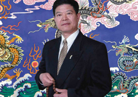
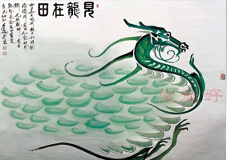
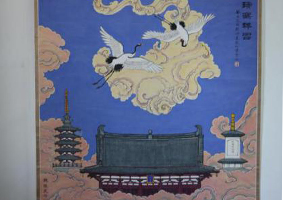

魏振武先生
中央工艺美术学院毕业，书画艺术大师郭风辉、李可染嫡传弟子。中国美术家协会会员、文化部中国书画委员会委员、高级工艺美术师职称。专擅画龙，万年皈依佛教，法号印仁。画室“好龙堂”。

见龙在田
《见龙在田》把龙画成我们国家——中国地图形，面向东海，爪子抓着台湾、钓鱼岛。龙身上龙鳞表示片片龙田。寓意深刻，发人深省。作品《见龙在田》诗、书、画、印无一不精，画界公认为画中尚品。

瑞鹤祥云
这是一幅意喻深刻的作品。《瑞鹤祥云》画作由大诗人臧克家题诗、书法家协会主席刘炳森题字、政协常委苏士澍书耑、人民艺术家魏振武亲笔创作。现在国家博物馆陈列，国宝级绘画作品。